Ajedrez a tres
Ajedrez a tresAjedrez de los 6 Reinos
Un cubo de 8 × 8 × 8 casillas y, en cada una de sus seis caras, un reino: el bloque de origen de un jugador. Hasta seis ejércitos entran en el cubo por todos los lados – arriba, abajo, izquierda, derecha, delante, detrás. En resumen: Sd6R.
▶ Jugar al Ajedrez de los 6 Reinos
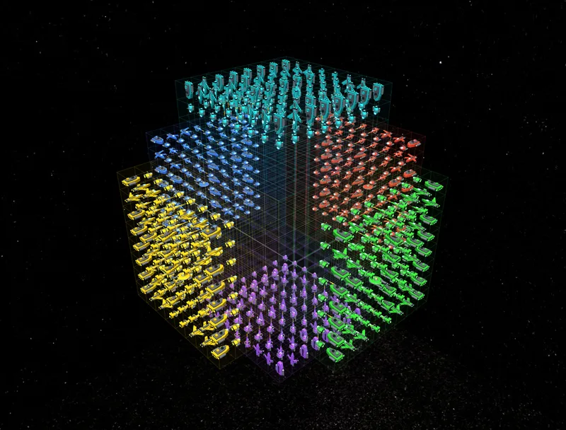
El campo de juego
- El cubo central tiene 8 × 8 × 8 = 512 casillas. Al principio está vacío – aquí se lucha.
- En cada cara hay un bloque de origen de 8 × 8 × 4 casillas. Allí están al principio las piezas de un jugador.
- En total son 2.048 casillas. Las esquinas y aristas fuera del cubo no forman parte del campo de juego.
- Las casillas se nombran con tres números del 1 al 16, por ejemplo 8·8·8 – el juego muestra el nombre de cada casilla al tocarla.
Jugadores y orden
Se juega a dos, tres, cuatro o seis; si se desea, el ordenador ocupa los asientos libres. A dos, Azul y Verde están frente a frente; a cuatro, Azul, Rojo, Verde y Amarillo se sientan en círculo alrededor del cubo; a seis se suman Morado (abajo) y Turquesa (arriba). Se juega por turnos. Quien invita decide cuántos juegan, quién es el ordenador y cómo termina la partida.
La posición inicial
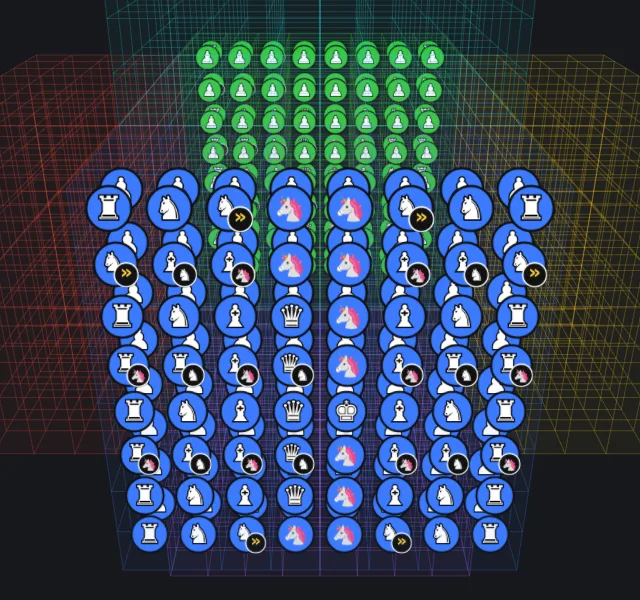
El estándar es la posición grande: en la capa exterior del bloque de origen hay 64 almirantes – ocho filas, en la del medio el rey con dama, torres, alfiles y caballos, alrededor las piezas especiales. Delante, 64 peones llenan una capa entera. Dos capas quedan libres hasta el cubo. Si lo prefieres más pequeño, elige en el juego una fila de 8 peones, dos filas o un bloque de 4 × 4 peones.
Direcciones en el espacio
En el cubo hay tres tipos de direcciones desde cada casilla:
- Ejes (6): un paso a la izquierda/derecha, adelante/atrás o arriba/abajo.
- Diagonales de cara (12): dos ejes a la vez – como la diagonal de un tablero.
- Diagonales espaciales (8): los tres ejes a la vez – atravesando un pequeño cubo de esquina a esquina.
Las imágenes muestran cada pieza en el centro del cubo vacío; los puntos verdes son las casillas que puede alcanzar. Arriba a la izquierda se ve la pieza como nave espacial; las piezas mágicas llevan puntas doradas o alas adicionales. En el juego eliges en «Piezas» entre símbolos, piezas de ajedrez, piezas estrella y naves espaciales.
Las piezas
Torre
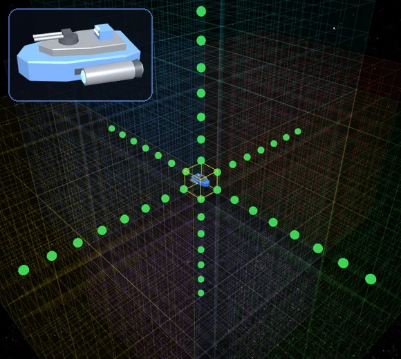
En línea recta a lo largo de los tres ejes: izquierda/derecha, adelante/atrás, arriba/abajo – 6 direcciones. Desde el centro del cubo, hasta 45 casillas.
Alfil
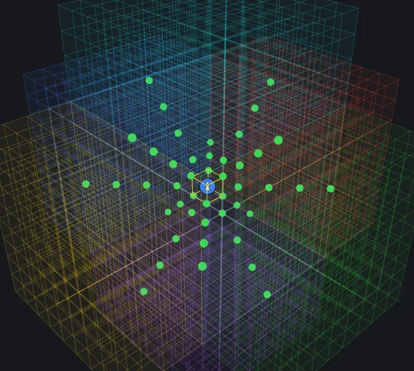
Por las diagonales de cara – dos ejes a la vez, como el alfil en un tablero, pero en los tres planos: 12 direcciones. Como opción, también por las diagonales espaciales (20 direcciones).
Unicornio
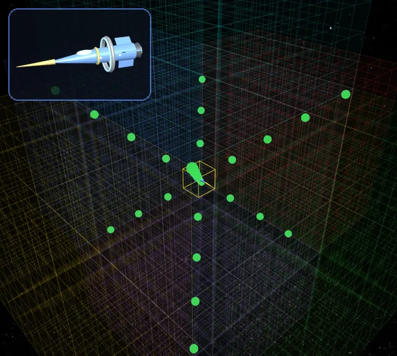
Solo por las diagonales espaciales – los tres ejes a la vez, de una esquina del cubo a la opuesta: 8 direcciones. La pieza proviene del Raumschach de Ferdinand Maack (1907).
Dama
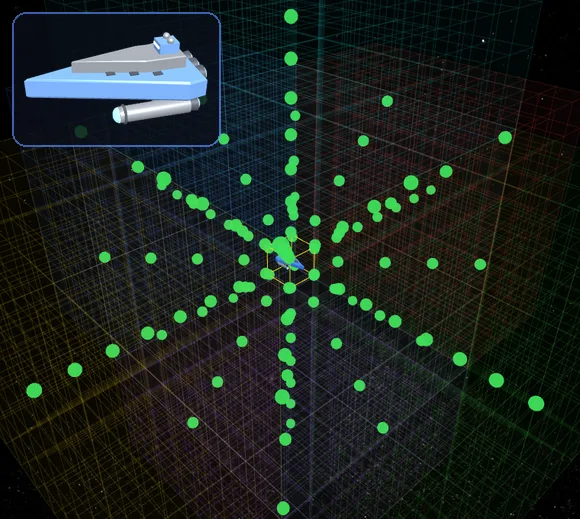
Torre, alfil y unicornio en una sola pieza: las 26 direcciones (como opción sin diagonales espaciales: 18). Desde el centro, hasta 118 casillas – la pieza clásica más fuerte.
Rey
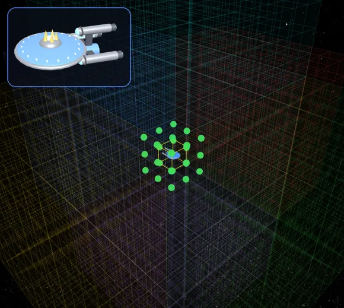
Una casilla en cada una de las 26 direcciones (como opción sin diagonales espaciales: 18). Cada jugador tiene exactamente un rey.
Caballo
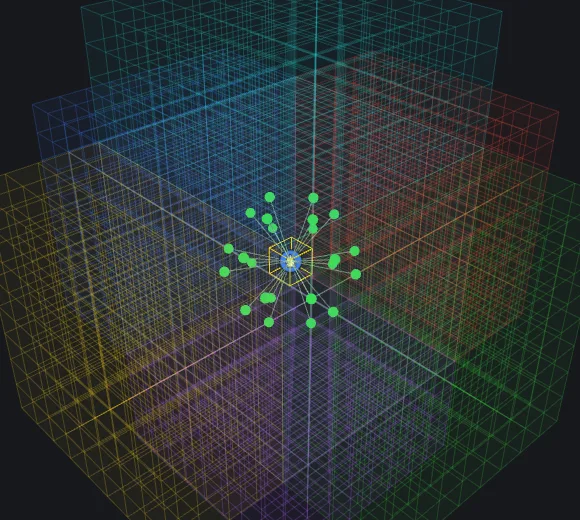
Dos casillas en un eje y una en otro – 24 casillas de destino, saltando por encima de todo. Como opción, además «2 + 1 + 1» por tres ejes (48 destinos).
Jinete nocturno
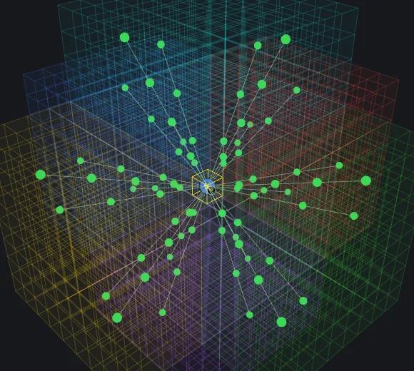
Un salto de caballo que puede repetirse en la misma dirección tantas veces como se quiera, mientras cada casilla de aterrizaje esté libre. En el cubo vacío llega muy lejos – el juego muestra como puntos las casillas en las que aterriza por el camino.
Amazona
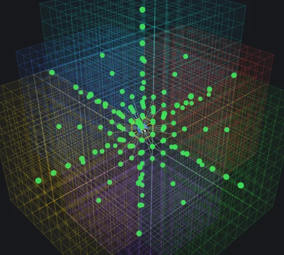
Dama + caballo – la pieza más fuerte del juego, hasta 142 destinos desde el centro del cubo.
Los peones
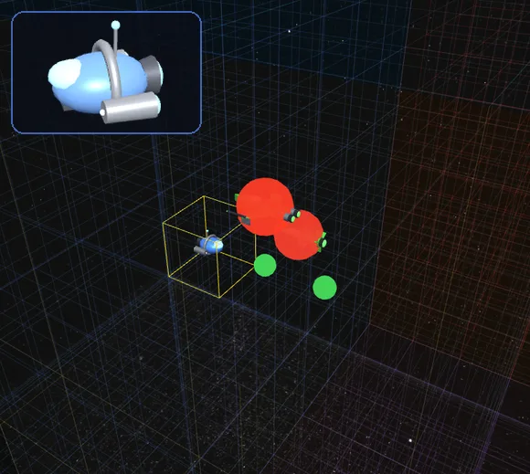
- Los peones avanzan una casilla en línea recta – siempre hacia el reino opuesto.
- En su propio bloque de origen pueden avanzar hasta dos casillas cada vez (ajustable: solo en la primera jugada o siempre).
- Se captura en diagonal hacia delante: delante-izquierda, delante-derecha, delante-arriba, delante-abajo – 4 direcciones (ajustable: también por las diagonales espaciales, 8).
- Coronación: cuando un peón llega al bloque de origen opuesto, se convierte en dama (ajustable: solo en su capa más lejana).
Jaque, mate y final de la partida
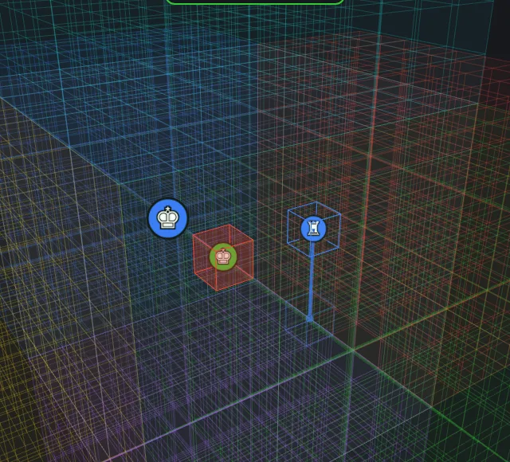
- Quien está en jaque debe salir de él. Ninguna jugada puede dejar al propio rey en jaque.
- Quien no puede mover sin quedar en jaque pasa turno.
- Final de la partida – lo elige el anfitrión:
«El primer mate decide»: en cuanto un jugador queda mate, termina la partida; gana quien dio el jaque.
«Eliminación»: quien queda mate queda eliminado y sus piezas desaparecen; se sigue hasta que quede uno. - Quien solo tiene el rey queda derrotado.
- Una vez que ha habido una captura: tras 30 rondas sin capturas ni jugadas de peón decide el material (peón 1, caballo, alfil y unicornio 3, torre y jinete nocturno 5, gobernador 5, arzobispo 6, duquesa y canciller 7, dama 9, amazona 11).
Mantener la visión de conjunto
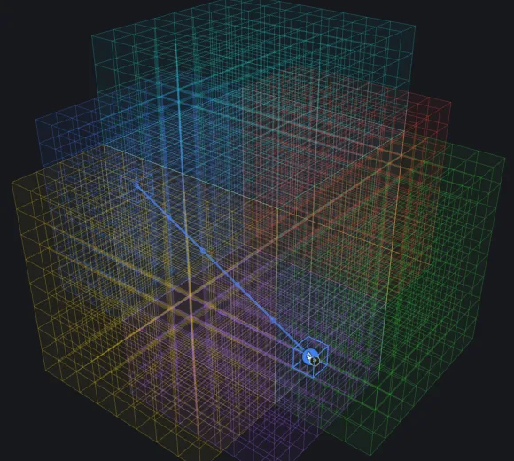
- Toca una pieza: sus jugadas se iluminan en verde, las capturas en rojo. También puedes tocar las piezas rivales – sus jugadas aparecen en azul claro y naranja, solo para ver.
- La última jugada se marca en el color de quien la hizo, con una línea y todos los aterrizajes intermedios.
- «🎯 Mi ejército» muestra tu propio ejército, «Colores» atenúa u oculta reinos sueltos, «Capa» aísla una sola capa.
- Girar: arrastrar. Zoom: rueda del ratón o dos dedos. Desplazar: clic derecho o dos dedos.
Lo que tienen en común todas las variantes
- Rivales: cada asiento puede ser una persona en este dispositivo, una persona invitada en línea o un ordenador – en cuatro niveles: fácil, medio, fuerte y maestro. El maestro también anticipa la respuesta de los rivales.
- Rivales del ordenador con carácter: los rivales del ordenador se llaman Blubbo, Grumbo, Flammo, Zappo, Spuki, Kraki, Sonno, Fluffi. Se alegran y se enfadan en los monitores, forjan alianzas contra el líder, a veces las traicionan, se vengan – y hablan si quieres. Puedes negociar con ellos en el chat («Grumbo, ¡ataquemos juntos a Rojo!»). Además recuerdan cómo juegan las personas. Para cada puesto del ordenador eliges qué rival del ordenador juega: cada uno tiene su aspecto, su voz y su estilo de juego. Flammo se lanza al ataque, Grumbo se atrinchera, Kraki construye con paciencia, Fluffi acumula material con codicia, Spuki caza al más débil. Con «🎤» puedes hablar con ellos sin más.
- Deber de ayuda (opción a partir de tres jugadores): si un jugador está en jaque, todos los que mueven antes que él deben ayudarle: si está mate, la jugada debe liberarlo; si no está mate, la jugada no puede darle mate. Quien no puede ayudar sella el mate.
- Reloj: tiempo por jugada, tiempo por partida o sin reloj. Si se agota el tiempo por jugada, la jugada se pierde; si se agota el tiempo de partida, quedas eliminado.
- En línea: en directo con monitores, cámara, micrófono, chat, reacciones con emojis, subtítulos y traducción automática – o como partida por correspondencia, en la que cada uno mueve cuando tiene tiempo (con aviso cuando te toca). Las partidas se pueden ofrecer en el vestíbulo público; el anfitrión decide si se puede mirar.
- Después de la partida: reproducción jugada a jugada, tablero de análisis con sugerencias del ordenador, evaluación con momentos clave, evaluación psicológica (venganza, nerviosismo tras pérdidas, alianzas tácitas, dicho y hecho) y, si se desea, un informe profesional de IA.
- Además: colores a elegir (también con signos para daltónicos), sonidos, pausa, guardar y cargar, «Mis partidas», introducción para principiantes, instalable como app, pantalla completa.
El Ajedrez de los 6 Reinos es un borrador y se sigue desarrollando. Las reglas de movimiento se pueden cambiar en el juego en «Reglas de movimiento para probar».